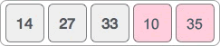
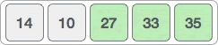
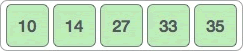

首页 > 编程笔记
冒泡排序算法
冒泡排序是所有排序算法中最简单、最易实现的算法，有时也称为起泡排序算法。
使用冒泡排序算法对 n 个数据进行排序，实现思路是：从待排序序列中找出一个最大值或最小值，这样的操作执行 n-1 次，最终就可以得到一个有序序列。
举个例子，对 {14, 33, 27, 35, 10} 序列进行升序排序（由小到大排序），冒泡排序算法的实现过程是：
由此，我们就得到了一个有序序列 {10, 14, 27, 33, 35}。
那么，如何从待排序序列中找到最大（或最小）的值呢？以找最大值为例，遍历待排序序列，过程中不断地比较相邻两个元素的值，如果后者比前者的值小就交换它们的位置。遍历完成后，最后一个元素就是当前待排序序列中最大的。
例如，从 {14, 33, 27, 35, 10} 中找到最大值 35 的过程如下：
1) 比较 14 和 33 的大小，显然后者更大，不需要交换它们的位置，序列不发生改变。

2) 比较 33 和 27 的大小，前者大于后者，交换它们的位置，新的序列如下图所示。

3) 比较 33 和 35 的大小，后者更大，不需要交换它们的位置，序列不发生改变。

4) 比较 35 和 10 的大小，前者大于后者，交换它们的位置，新的序列如下图所示。
可以看到，序列中值最大的元素 35 被移动到了序列的末尾。整个查找最大值的过程中，最大的元素就像水里的气泡一样，一点一点地“冒”了出来，这也是将该算法命名为冒泡排序算法的原因。
采用同样的方法，我们可以很轻松地从 {14, 27, 33, 10} 中找到最大值 33。找到 33 后的新序列为：

从 {14, 27, 10} 中找到最大值 27 后，新的序列如下图所示：
从 {14, 10} 中找到最大值 14 后，新的序列如下图所示：
如下是用冒泡排序算法对 {14, 33, 27, 35, 10} 完成升序排序的 C 语言程序：
如下是用冒泡排序算法对 {14, 33, 27, 35, 10} 完成升序排序的 Java 程序：
如下是用冒泡排序算法对 {14, 33, 27, 35, 10} 完成升序排序的 Python 程序：
以上程序的输出结果均为：
使用冒泡排序算法对 n 个数据进行排序，实现思路是：从待排序序列中找出一个最大值或最小值，这样的操作执行 n-1 次，最终就可以得到一个有序序列。
举个例子，对 {14, 33, 27, 35, 10} 序列进行升序排序（由小到大排序），冒泡排序算法的实现过程是：
- 从 {14, 33, 27, 35, 10} 中找到最大值 35；
- 从 {14,33,27,10} 中找到最大值 33；
- 从 {14, 27, 10} 中找到最大值 27；
- 从 {14, 10} 中找到最大值 14；
由此，我们就得到了一个有序序列 {10, 14, 27, 33, 35}。
那么，如何从待排序序列中找到最大（或最小）的值呢？以找最大值为例，遍历待排序序列，过程中不断地比较相邻两个元素的值，如果后者比前者的值小就交换它们的位置。遍历完成后，最后一个元素就是当前待排序序列中最大的。
例如，从 {14, 33, 27, 35, 10} 中找到最大值 35 的过程如下：
1) 比较 14 和 33 的大小，显然后者更大，不需要交换它们的位置，序列不发生改变。
2) 比较 33 和 27 的大小，前者大于后者，交换它们的位置，新的序列如下图所示。
3) 比较 33 和 35 的大小，后者更大，不需要交换它们的位置，序列不发生改变。
4) 比较 35 和 10 的大小，前者大于后者，交换它们的位置，新的序列如下图所示。

可以看到，序列中值最大的元素 35 被移动到了序列的末尾。整个查找最大值的过程中，最大的元素就像水里的气泡一样，一点一点地“冒”了出来，这也是将该算法命名为冒泡排序算法的原因。
采用同样的方法，我们可以很轻松地从 {14, 27, 33, 10} 中找到最大值 33。找到 33 后的新序列为：
从 {14, 27, 10} 中找到最大值 27 后，新的序列如下图所示：

从 {14, 10} 中找到最大值 14 后，新的序列如下图所示：

所有比 10 大的数都被一一找到，所以 10 必然是最小的数，这也是为什么“对 n 个数据进行排序，找最大值的过程只重复 n-1 次”的原因。
冒泡排序算法的具体实现
如下是冒泡排序算法实现升序排序的伪代码：
Bubble_sort(list): // list 表示待排序序列
for i <- 0 to length(list)-1: // 对于元素个数为 n 的 list 序列，需遍历 n-1 次，这里用 [0,length(list)-1) 表示。
for j <- 1 to length(list) - i: // 从第 1 个元素开始遍历，遍历区间为 [1,length(list)-i)。
if list[j] > list[j+1]: // 若进行降序排序，则改成 < 小于号
swap(list[j] , list[j+1]) // 交换 2 个相邻元素的位置
return list // 返回排好序的序列
根据伪代码，冒泡排序算法的时间复杂度为O(n2)。如下是用冒泡排序算法对 {14, 33, 27, 35, 10} 完成升序排序的 C 语言程序：
#include<stdio.h>
#define N 5 //设定待排序序列中的元素个数
//实现冒泡升序排序算法的函数，list[N] 为待排序数组
void Bubble_sort(int list[N]) {
int i, j;
int temp = 0;
// N 个元素，遍历 N-1 次
for (i = 0; i < N - 1; i++) {
// 从第 1 个元素开始遍历，遍历至 N-1-i
for (j = 0; j < N - 1 - i; j++) {
//比较 list[j] 和 list[j+1] 的大小
if (list[j] > list[j + 1]) {
//交换 2 个元素的位置
temp = list[j];
list[j] = list[j + 1];
list[j + 1] = temp;
}
}
}
}
int main() {
int i = 0;
int list[N] = { 14,33,27,35,10 };
Bubble_sort(list);
//输出已排好序的序列
for (i = 0; i < N; i++) {
printf("%d ", list[i]);
}
return 0;
}
如下是用冒泡排序算法对 {14, 33, 27, 35, 10} 完成升序排序的 Java 程序：
public class Demo {
public static void Bubble_sort(int[] list) {
int length = list.length;
// length 个元素，遍历 length-1 次
for (int i = 0; i < length-1; i++) {
// 从第 1 个元素开始遍历，遍历至 length-1-i
for (int j = 0; j < length - 1 - i; j++) {
// 比较 list[j] 和 list[j++] 的大小
if (list[j] > list[j + 1]) {
// 交换 2 个元素的位置
int temp = list[j];
list[j] = list[j + 1];
list[j + 1] = temp;
}
}
}
}
public static void main(String[] args) {
int[] list = { 14, 33, 27, 35, 10 };
Bubble_sort(list);
// 输出已排好序的序列
for (int i = 0; i < list.length; i++) {
System.out.print(list[i] + " ");
}
}
}
如下是用冒泡排序算法对 {14, 33, 27, 35, 10} 完成升序排序的 Python 程序：
#待排序序列
list = [14,33,27,35,10]
def Bubble_sort():
#序列中有 n 个元素，就遍历 n-1 遍
for i in range(len(list-1)):
#从第 1 个元素开始遍历，比那里至 len(list)-1-i
for j in range(len(list)-1-i):
#比较两个相邻元素的大小
if list[j] > list[j+1]:
#交换 2 个元素的位置
list[j],list[j+1] = list[j+1],list[j]
Bubble_sort()
for i in list:
print(i,end=" ")
以上程序的输出结果均为：
10 14 27 33 35
关注公众号「站长严长生」，在手机上阅读所有教程，随时随地都能学习。内含一款搜索神器，免费下载全网书籍和视频。

微信扫码关注公众号